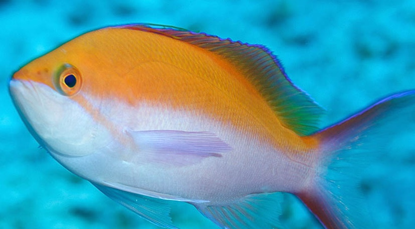
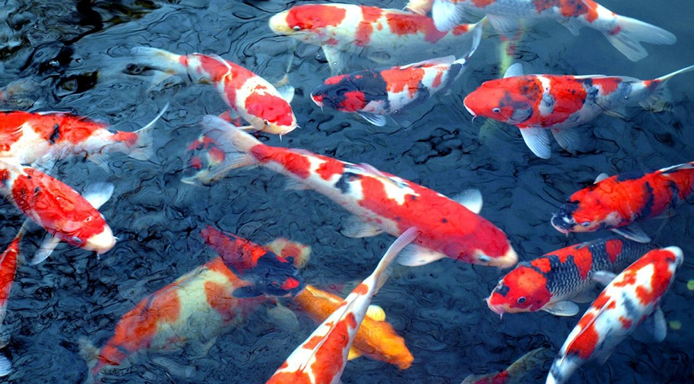
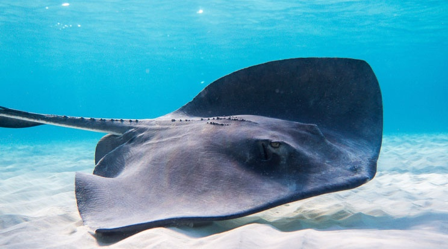
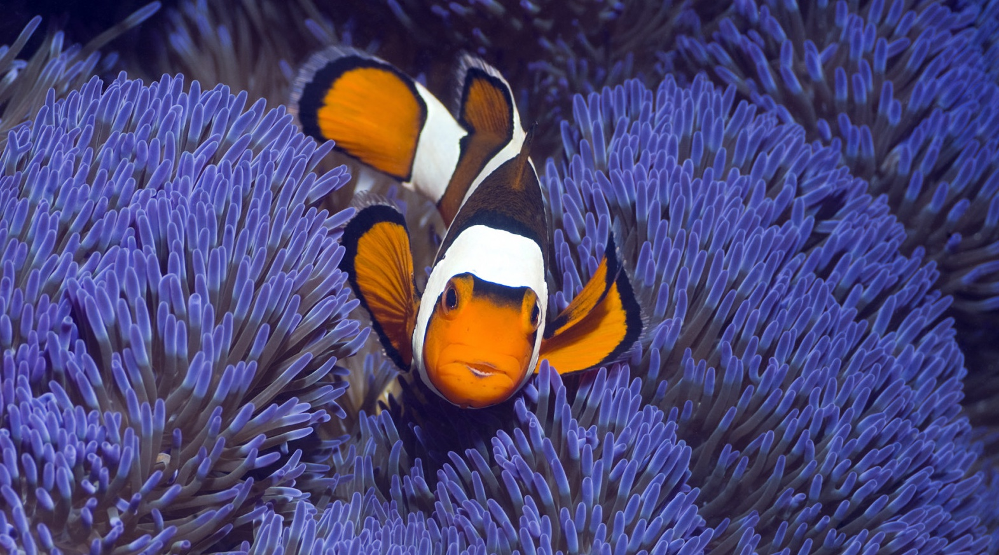
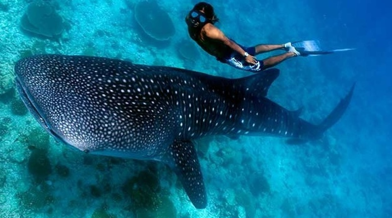
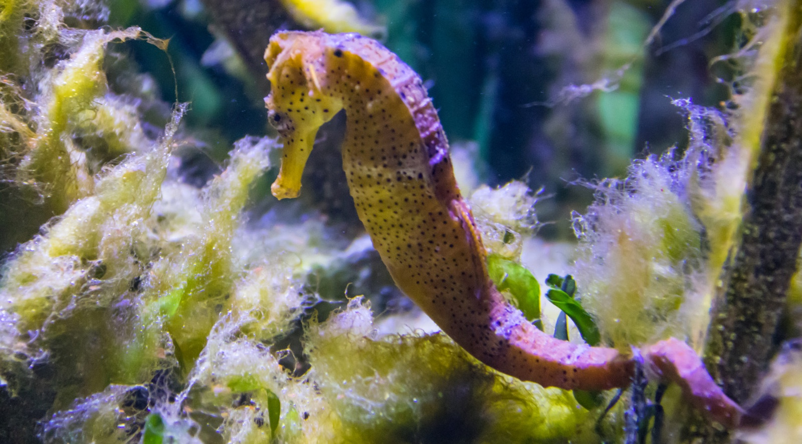
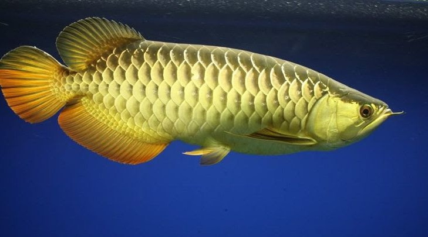
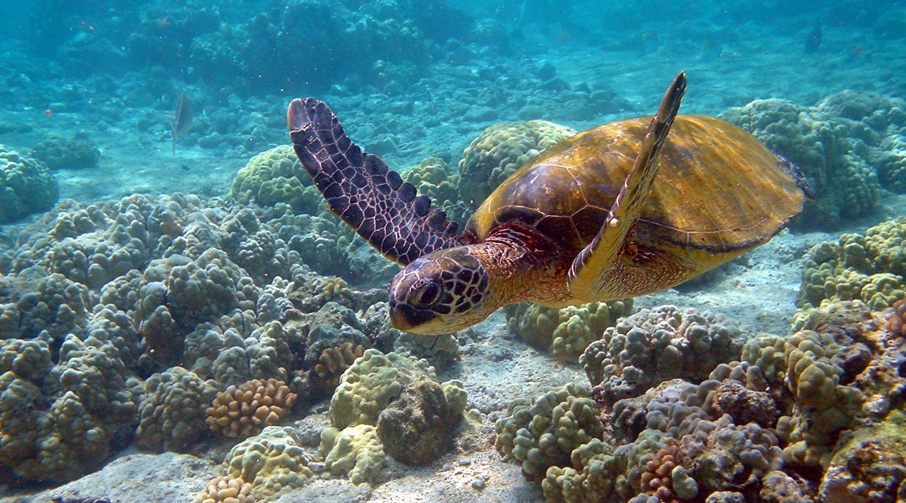

Cre: Internet
READ MORE

Cre: Internet
READ MORE

Cre: Internet
READ MORE

Cre: Internet
READ MORE

Cre: Internet
á mập là một nhóm cá thuộc lớp Cá sụn, thân hình thủy động
học dễ dàng rẽ nước, có từ 5 đến 7 khe mang dọc mỗi bên hoặc
gần đầu, da có nhiều gai nhỏ bao bọc cơ thể chống lại sự ký
sinh, các hàng răng trong miệng có thể mọc lại được
READ MORR

Cre: Internet
Cá ngựa, hay hải mã, là tên gọi chung của một chi động vật
sống ở đại dương ở các vùng biển nhiệt đới; được xem là một
loài thuốc quý ở khu vực Đông Á, đặc biệt là ở Trung Quốc và
Việt Nam.
READ MORE

Cre: Internet
Tên gọi cá rồng là một từ thông dụng trong tiếng Việt để chỉ
nhiều loại cá không có quan hệ. Trong tự nhiên chúng sống
chủ yếu ở các hồ rộng hoặc ở những con sông lớn, trong đó có
một số loài rất hiếm được liệt kê trong sách Đỏ của thế giới
READ MORE

Cre: Internet
Rùa biển là một liên họ bò sát biển trong bộ Rùa, sinh sống
ở tất cả các đại dương trên thế giới ngoại trừ vùng Bắc Cực.
Riêng loài rùa lưng phẳng thì chỉ được tìm thấy ở vùng biển
phía bắc Australia.
READ MORE